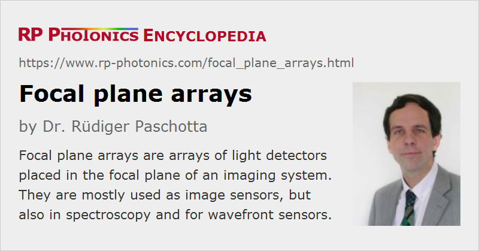

Focal Plane Arrays
Acronym: FPA
Definition: arrays of light detectors placed in the focal plane of an imaging system
Alternative terms: staring array, staring-plane array
More general term: image sensors
Category: light detection and characterization
How to cite the article; suggest additional literature
Author: Dr. Rüdiger Paschotta
In photonics, a focal plane array (FPA) is essentially an array of light detectors, which is placed in the focal plane of an imaging system (a simple lens or an objective, possibly a telescope). It would actually be more accurate to talk about an image plane instead of a focal plane, which is not exactly the same.
Typically, a focal plane array is a rectangular two-dimensional array containing many thousands or even a several million detectors. The detectors can be either photodetectors (e.g. photodiodes or photoconductive detectors) or thermal detectors (e.g. microbolometers), add typically each detector has dimensions between a few microns and a few tens of microns. Extremely sensitive and fast detection including photon counting is possible with arrays of Geiger-mode avalanche photodiodes (SPADs).
The alternative term staring array comes from the fact that in conjunction with the imaging optics an FPA receives radiation only from some range of directions.
The term focal plane array is also known in radio astronomy for arrays of receivers, which can be of different types.
Key Properties
Resolution
With the resolution one usually means the number of detector pixels in both directions – for example, 1024 × 1024, 3072 × 2048 or 4096 × 4096 pixels. This limits the achievable image resolution, provided that the quality of the imaging optics is good enough.
Readout Electronics
Besides the detectors themselves, focal plane arrays can contain additional readout and processing electronics. Some of them produce digital output signals, while others have analog outputs. For example, CCD chips sequentially deliver analog voltages corresponding to the different pixels, while CMOS chips digitize the signals.
Spectral Response
The spectral response is determined by the used detector technology. FPGAs are available for very different spectral regions, including not only visible, infrared and ultraviolet light, but also for X-rays.
Silicon-based FPAs are sensitive for visible light and short-wavelength near-infrared light, but not for longer wavelengths – except for Schottky-barrier detectors, which however exhibit fairly low quantum efficiencies. However, there are also focal plane arrays containing infrared detectors for wavelengths of several micrometers. For example, they can be based on mercury cadmium telluride (MCT, HgxCd1−xTe), indium gallium arsenide (InGaAs), indium antimonide (InSb), PtSi (Schottky barrier detectors), QWIPs (quantum well infrared photodetectors) or microbolometers.
There are also dual-band and even multicolor infrared focal plane arrays, which can for example measure the intensity of mid-wave and long-wave infrared radiation independently. That is essential for some military applications, for example.
Monolithic vs. Hybrid FPAs
One distinguishes monolithic and hybrid focal plane array architectures. The simplest fabrication methods produce monolithic FPAs, e.g. all based on silicon technology. That technology strongly profits from the progress in related technologies such as DRAM memory. Silicon technology, however, usually restricts the spectral sensitivity to the visible and near-infrared range. Therefore, one also uses hybrid devices, which are assembled for example with flip-chip bonding of two different wafers: a light-sensitive part, e.g. based on III-V semiconductors, and an electronic part based on silicon.
Dynamic Range
For analog FPAs, the dynamic range is determined by the maximum output signal and the noise floor. For digital FPAs, the number of bits per pixel reflects the dynamic range. For example, 10 bits allow for 210 = 1024 different output values, corresponding to ≈30 dB dynamic range, assuming that the lowest bit does not deliver random values due to detector noise.
Temporal Integration
Many FPAs integrate their input signals over some exposure time, e.g. by collecting an electric charge. One may sometimes use rather long exposure times for sensitive detection.
Uniformity of Response
The uniformity of response is often fairly good for silicon-based sensors, while substantial differences between the pixels occur for most infrared FPAs. One may therefore need to subtract pixel-dependent offset values and also correct for the varying sensitivity of the pixels. That is usually done with software outside the chip. For precise measurements, one may have to regularly record the dark levels, which depends on temperature, for example.
Applications of the Focal Plane Arrays
The main application is imaging in various areas. With a two-dimensional detector array, one can directly acquire two-dimensional images, e.g. in flash LIDAR devices. Particularly widespread are silicon-based CCD and CMOS sensors, as used e.g. in photo cameras and video cameras; they have nearly completely replaced the formerly used vidicon tubes. Particularly advanced focal plane imaging arrays have been developed for applications in astronomy, where ultimate sensitivity is essential.
For more details, see the article on image sensors.
Some focal plane arrays are used for spectrometers. Here, incoming light is spectrally dispersed such that each detector receives radiation only in a small spectral region.
Another application is in wavefront sensors, e.g. of Shack–Hartmann type. Here, a microlens array is placed before the focal plane array, each one producing a focus on the detector plane. The location of that focus indicates the local wavefront curvature. One requires some dozens of detector pixels, for example, for a single pixel of the generated wavefront image.
Questions and Comments from Users
Here you can submit questions and comments. As far as they get accepted by the author, they will appear above this paragraph together with the author’s answer. The author will decide on acceptance based on certain criteria. Essentially, the issue must be of sufficiently broad interest.
Please do not enter personal data here; we would otherwise delete it soon. (See also our privacy declaration.) If you wish to receive personal feedback or consultancy from the author, please contact him e.g. via e-mail.
By submitting the information, you give your consent to the potential publication of your inputs on our website according to our rules. (If you later retract your consent, we will delete those inputs.) As your inputs are first reviewed by the author, they may be published with some delay.
See also: image sensors, photodetectors, thermal detectors, infrared detectors
and other articles in the category light detection and characterization
|  |
If you like this page, please share the link with your friends and colleagues, e.g. via social media:
These sharing buttons are implemented in a privacy-friendly way!